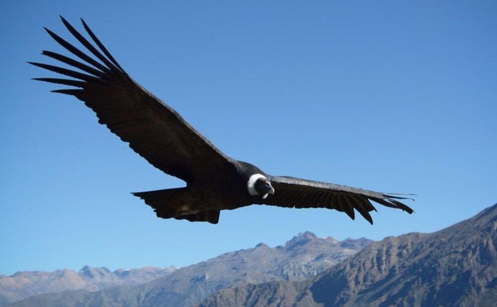

Presentacion
En momentos en que distintas especies animales ganan terreno debido a la emergencia sanitaria y al aislamiento social, preventivo y obligatorio, y por ende el contacto entre humanos y animales salvajes se volverá más habitual una vez la sociedad retome su rutina normal. Por esta razón es que esta página tiene por objeto desarrollar estrategias de protección a partir de concientizar sobre la importancia de algunas especies en nuestra provincia. Esta información será utilizada luego como un indicador de gestión de calidad ambiental.
Para tal fin, buscaremos crear una fuente de información confiable la cual permita al usuario aprender de la fauna local, de esta forma sabrá con que se enfrenta y como proceder para evitar cualquier conflicto que pueda originar un peligro hacia su persona como asi tambien al animal en cuestión.
En esta página tambien podrá encontrar información sobre asociaciones y ONG's vinculados a la fauna silvestre, las cuales no solo podrán brindar más información, sino que tambien podrán brindar soporte en casos extremos en los cuales se necesite de ayuda especializada para el trato con la fauna silvestre.